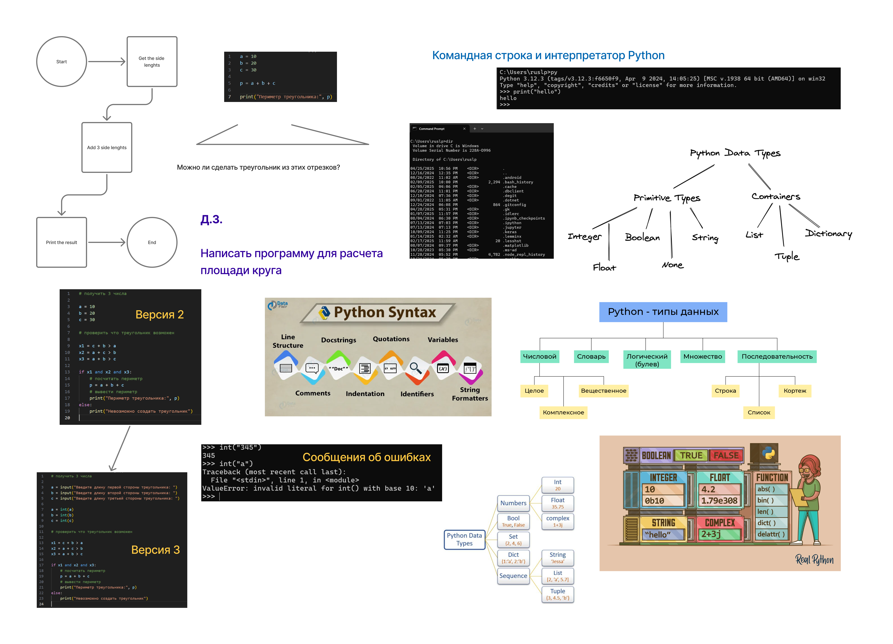

dir — просмотр содержимого папкиpy # Запускает интерпретатор Python
>>> print("Hello") # Выполняем команду
Hello
a, b, c).c + b > aa + c > ba + b > cp = a + b + c).a = int(input("Введите длину первой стороны: "))
b = int(input("Введите длину второй стороны: "))
c = int(input("Введите длину третьей стороны: "))
x1 = c + b > a
x2 = a + c > b
x3 = a + b > c
if x1 and x2 and x3:
p = a + b + c
print("Периметр треугольника:", p)
else:
print("Невозможно создать треугольник")
Простые типы:
10, -5.3.14, 0.5.True, False."Hello", 'Python'.Контейнеры:
[1, 2, 3].(1, 2, 3) (неизменяемые).{"key": "value"}.{1, 2, 3} (уникальные элементы).(эти типы изучим позже)
Синтаксис - правила написания кода.
#.print(f"Сумма: {a + b}") # f-строки
>>> int("345") # Корректно
345
>>> int("a") # Ошибка!
Traceback ... ValueError: invalid literal for int() with base 10: 'a'
ValueError)invalid literal for int() with base 10: 'a')abs(), len(), print()..upper(), .split().Домашнее задание:
Помните: Python — язык, который любит чистоту и лаконичность! 😊
